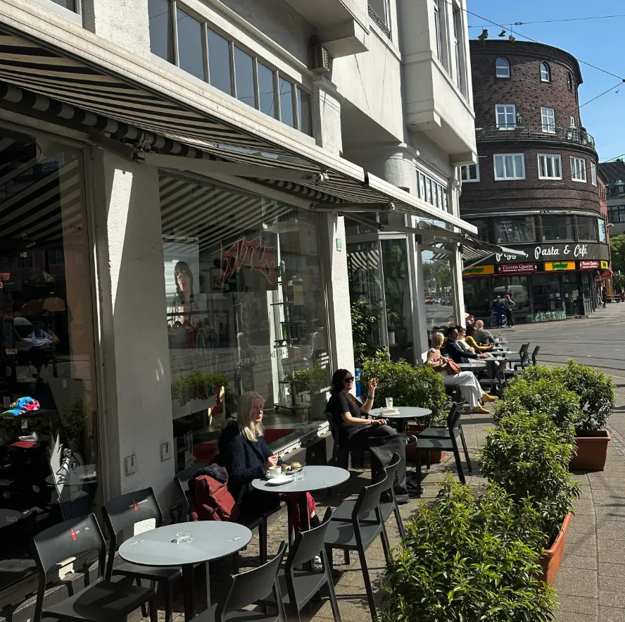
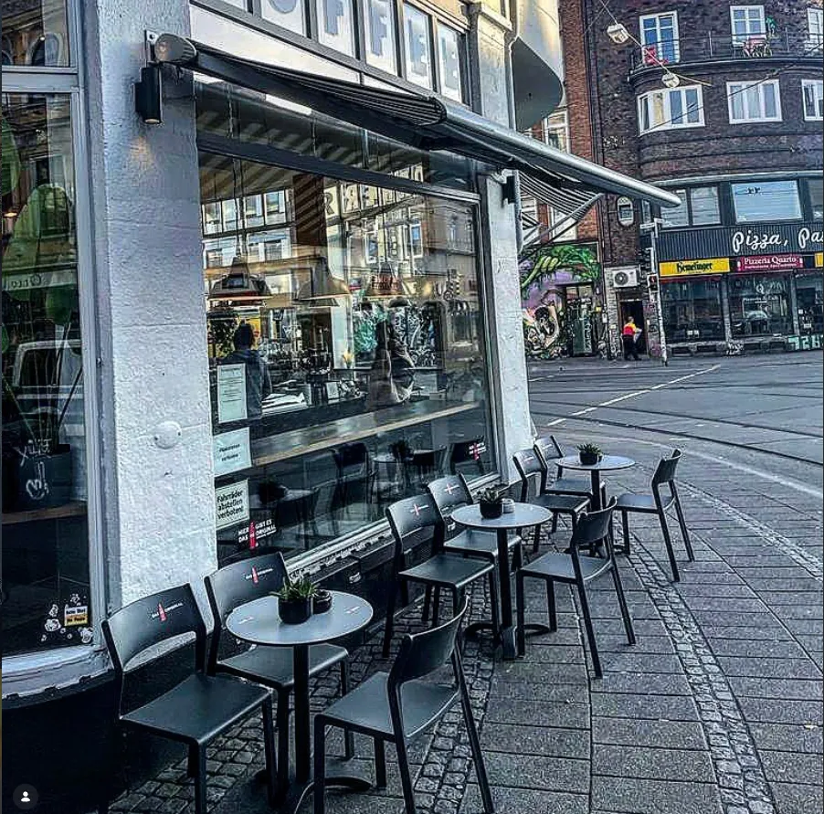
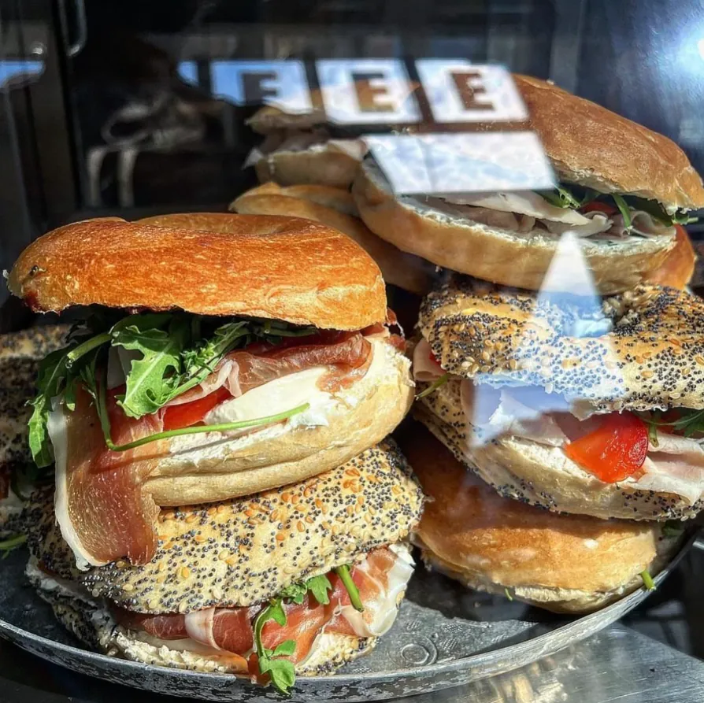
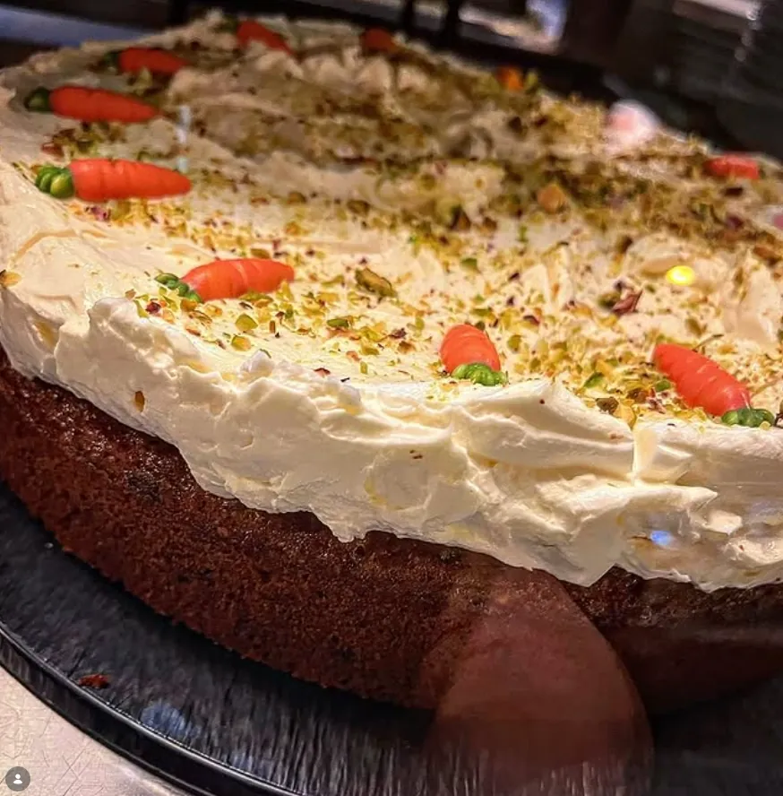

Specialty Coffee auf zwei Etagen, mitten im Viertel. Zum Arbeiten am Laptop, zum Treffen mit Freunden oder einfach, um durchzuatmen.
Coffee Corner ist der Ort, an dem das Viertel zusammenkommt. Morgens der erste Flat White auf dem Weg zur Arbeit, mittags ein ruhiger Tisch für Laptop und Gedanken, nachmittags ein langes Gespräch bei Kuchen.
Zwei Etagen, große Fenster, fairer Kaffee – und immer ein Platz frei. Genau so soll sich eine gute Ecke anfühlen.

Trubel, Theke, der Duft von frisch gemahlenen Bohnen. Schnell ein Kaffee to go oder ein Plausch mit dem Team.
Ruhiger, Steckdose am Tisch, gutes WLAN. Der Lieblingsplatz für alle, die fokussiert arbeiten wollen.
Hausgemachter Kuchen, hervorragende Bewertungen und ein Team, das sich deinen Namen merkt.



„Der beste Platz im Viertel zum Arbeiten & Verweilen."
Stand laut öffentlichen Angaben – bitte bestätigen.
Ob fokussierter Arbeitstag oder gemütlicher Nachmittag: Bei Coffee Corner bist du richtig.
Route planen